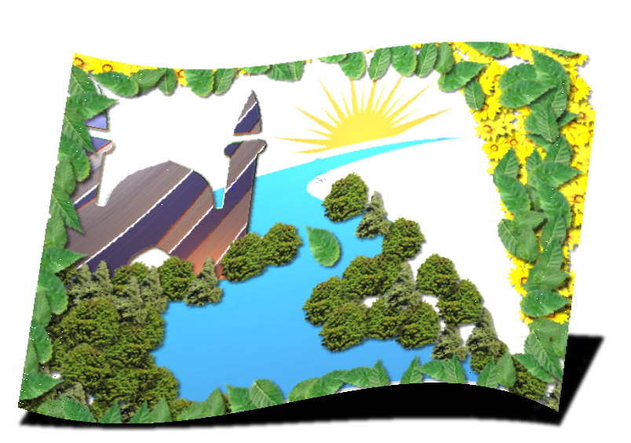

این برنامه شامل اوقات شرعی تمام شهرهای ایران است.
برای استفاده باید ابتدا ساعت سیستم خود را تنظیم کنید
از سایت زیر می توانید ساعت دقیق را برای سیستم خود تنظیم کنید:
www.time.ir
همچنین در هنگام دریافت اطلاعات اوقات شرعی شهر خود
باید حتما اتصال اینترنت برقرار باشد
بعد از دریافت اطلاعات
می توانید اتصال اینترنت خود را قطع کنید .درواقع فقط برای دریافت اطلاعات نیاز به اتصال اینترنت دارید و
بعد از آن برنامه بصورت آفلاین بکار خود ادامه میدهد.
